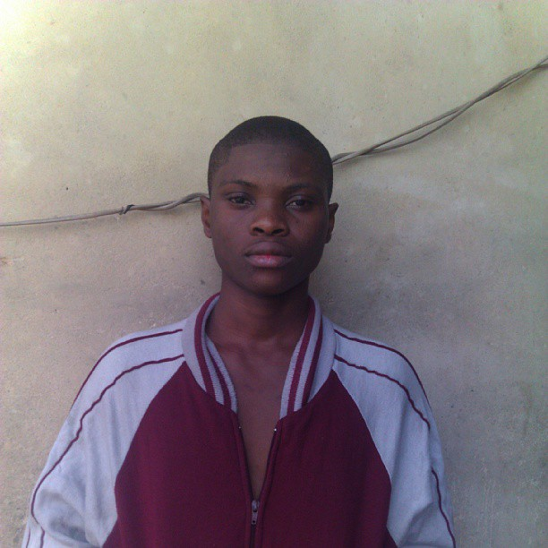

 During my high-school days, I wasn't even sure I would be going into Computer Science as a profession, I just liked Computers and Programming in particular. The idea of solving real world problems using a Computer or any similar devices for that matter has been my real motivation. Back when, I would configure my friends computers and set up a Dial-up Modem on MTN to give them access to the internet and even configure their devices to bypass ISPs and browse the internet for free. Granted it wasn't exactly the aspect of Computer Science I hoped for but I was doing great and as soon as I knew how to program computers I'd be off solving problems and "saving the world". My graduating year in high-school set the pace for me. I had friends and family members encouraging me to delve into Computer Science or any of the related fields because - "I had the flair for it".
Over the years I've learnt a great deal about computers in general. My Career in Computer Science has been shaped and influenced immensely by great men - Lecturers and Colleagues alike. They've helped honed my skills as a software craftsman and my learning process has been graceful, however, not without hassles. The world is full of bugs that bite and it's safe to say I've had some share of its fangs - I've had to learn the hard way and it is this rough bump that has made the road smoother. Ironic eh?
At present, I'm an undergraduate finalist of Mathematics and Computer Science at Delta State University, Abraka. I help institutions and companies solve real-world problems using the Computer and I'm currently a facilitator at Codulab Technologies - A Company that is dedicated to enhancing the programming skills of Nigerian Youths and I'm proud to be facilitating a cause such as this. In general, I'm living my dreams.